Hack VS · Foire du Valais
Never a stranger
at the Club again.
Real encounters.
A network that lasts all year.
Working prototype · FR / DE / EN
Hack VS · Foire du Valais
Real encounters.
A network that lasts all year.
Working prototype · FR / DE / EN
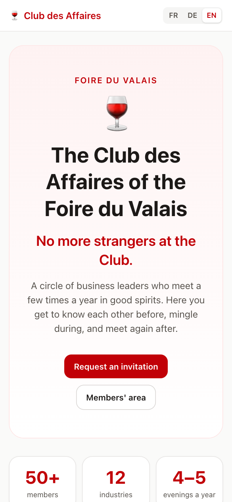
The challenge → my solution
≈ 50 leaders · 4–5 evenings a year.
Newcomers arrive as strangers. Familiar faces stay together.
Discover people, passions and what they can help with.
Meet someone new, with a reason to start talking.
QR badges, people bingo and rotating dinner tables.
Shared milestones, member news and personal invitations.
Members only · no forced selling · French / German / English
Before the evening · the web app
Digital & AI ↔ Swiss German market.
Petite Arvine gives them something to talk about.
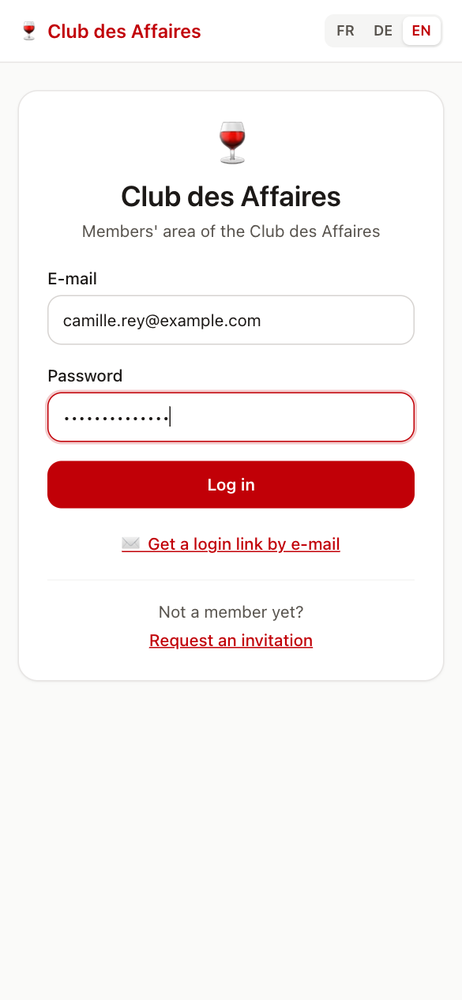
Before the evening · the web app
Digital & AI ↔ Swiss German market.
Petite Arvine gives them something to talk about.
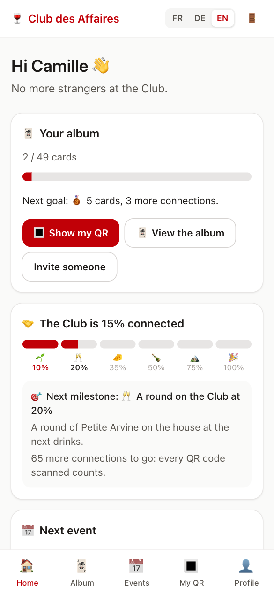
Before the evening · the web app
Digital & AI ↔ Swiss German market.
Petite Arvine gives them something to talk about.
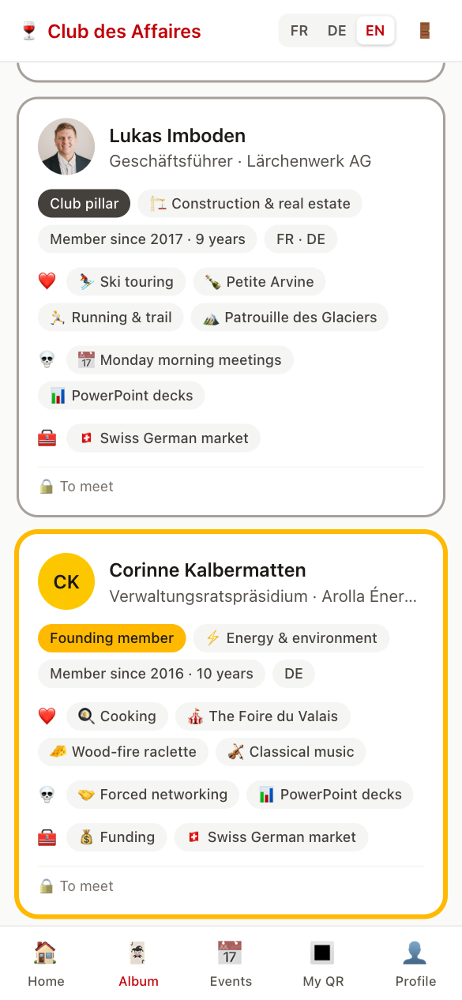
Before the evening · the web app
Digital & AI ↔ Swiss German market.
Petite Arvine gives them something to talk about.
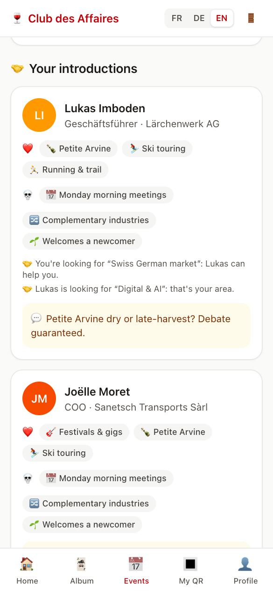
At the evening · QR & people bingo
Demo: 15% connected → next milestone at 20%.
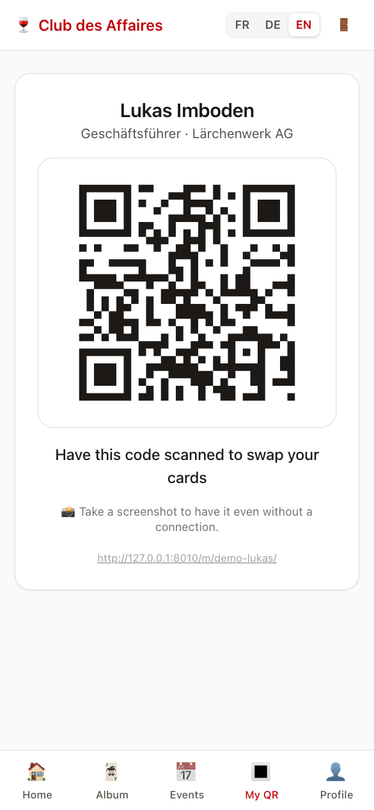
At the evening · QR & people bingo
Demo: 15% connected → next milestone at 20%.
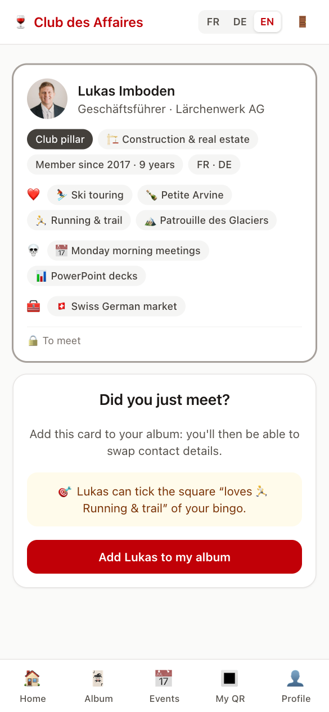
At the evening · QR & people bingo
Demo: 15% connected → next milestone at 20%.
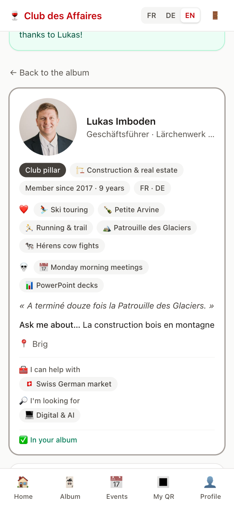
At the evening · QR & people bingo
Demo: 15% connected → next milestone at 20%.
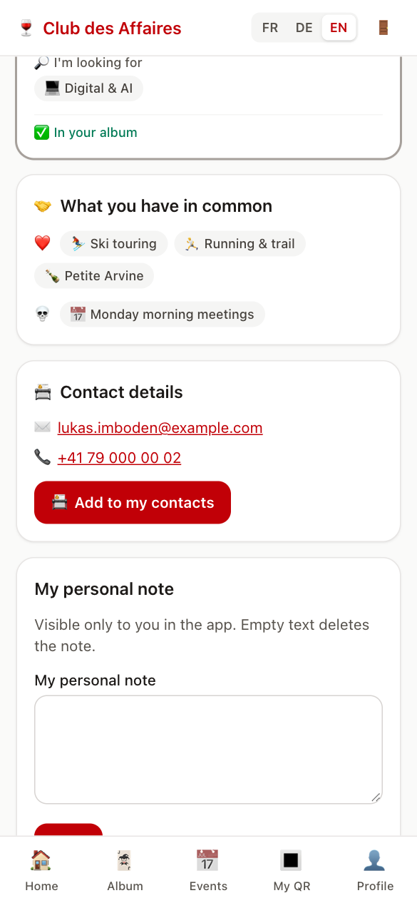
At the evening · QR & people bingo
Demo: 15% connected → next milestone at 20%.
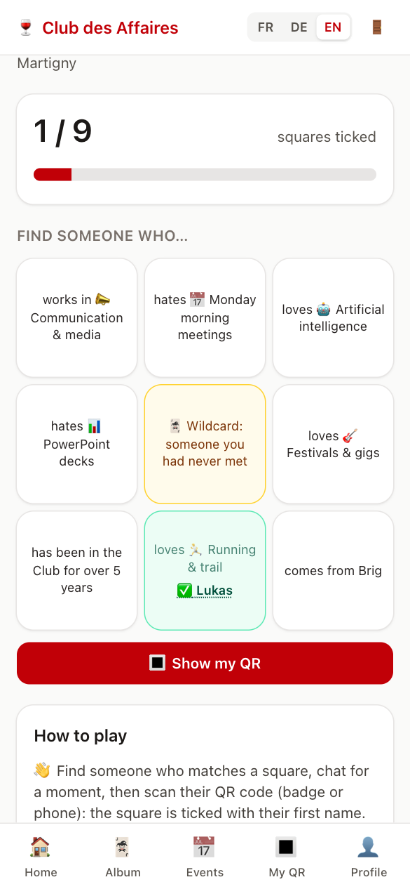
Between evenings · retention & recruitment
Email workflows prepared · sending activated at launch.
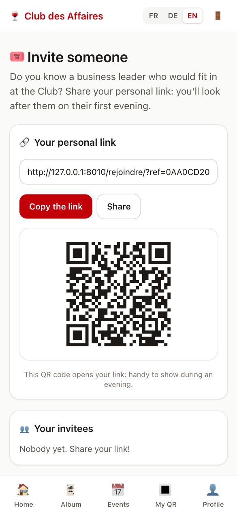
Between evenings · retention & recruitment
Email workflows prepared · sending activated at launch.
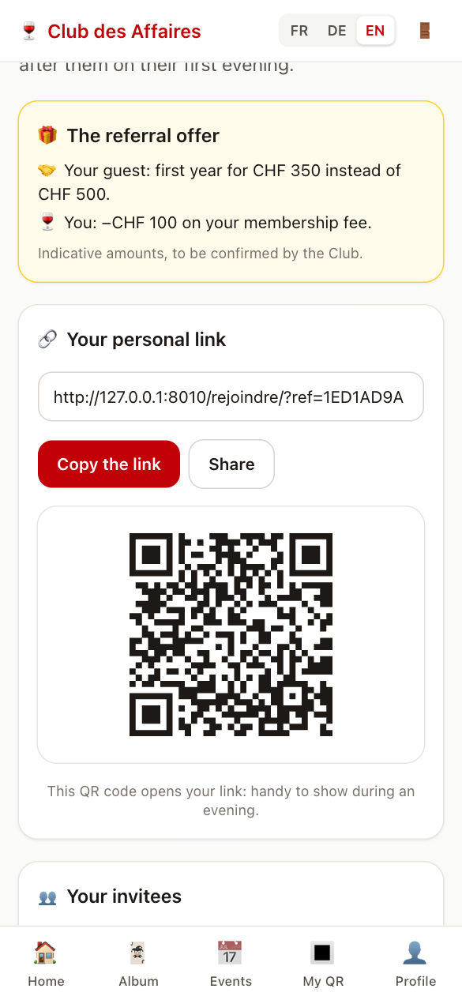
Between evenings · retention & recruitment
Email workflows prepared · sending activated at launch.
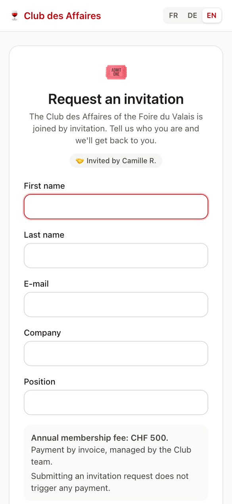
For the team · guided administration
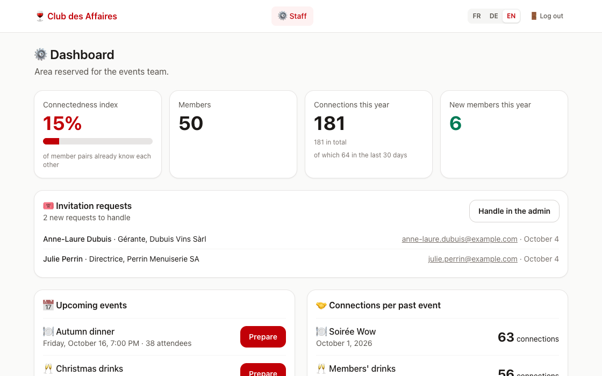
Shown: 38 guests · 3 courses.
For the team · guided administration
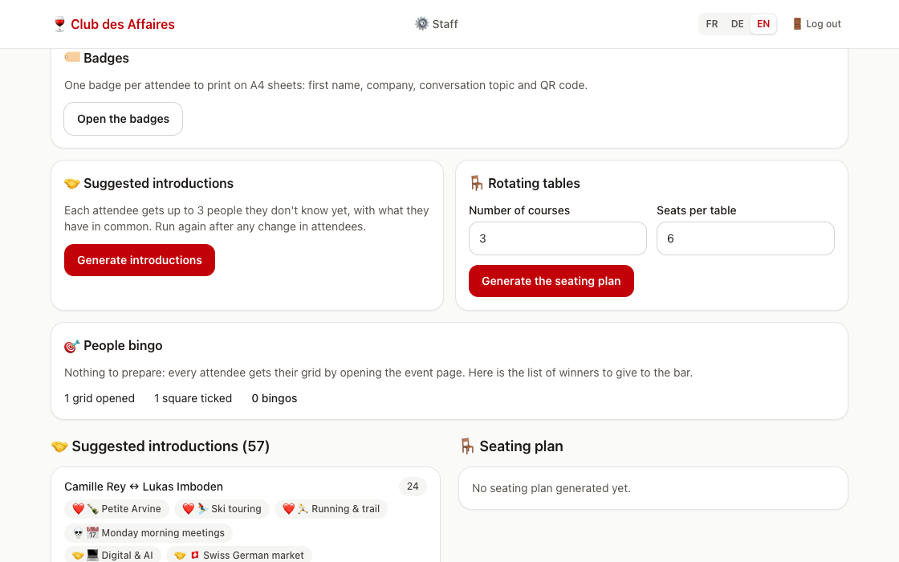
Shown: 38 guests · 3 courses.
For the team · guided administration
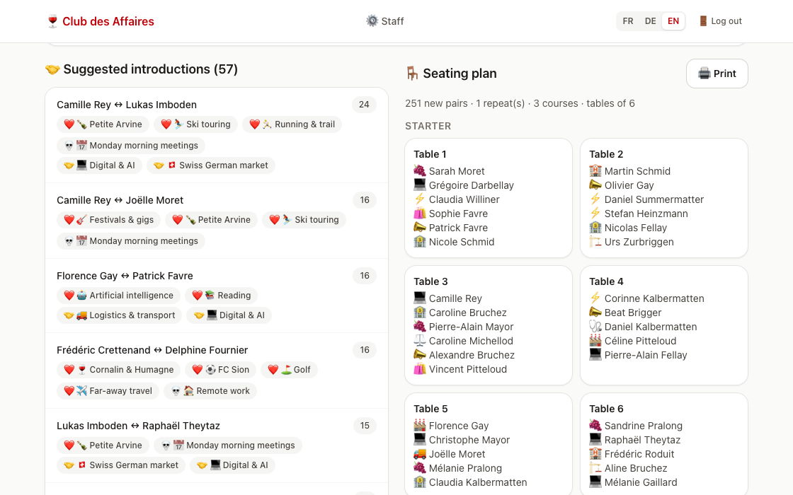
Shown: 38 guests · 3 courses.
For the team · guided administration
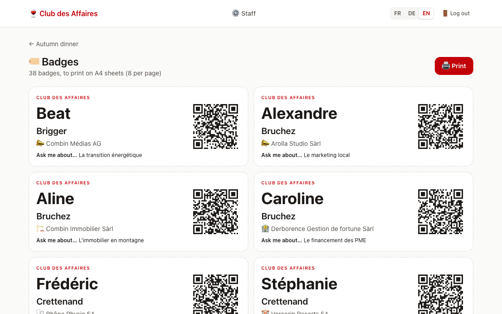
Shown: 38 guests · 3 courses.
Launch · costs & roadmap
≈ 30 CHF
per month to run in Switzerland
Hosting, database, backups, emails, domain.
Budget estimate · CHF 300–450/year.
Setup ≈ CHF 20, excluding development.
New development quoted separately.
Member journey + tools for the event team.
Swiss hosting, member import, email activation.
Online membership payments. For now: manual invoices.
Appendix
A1 What is new · A2 Feasibility · A3 Architecture · A4 Algorithms · A5 Security & privacy · A6 Go-to-market · A7 Costs & more features
A1 · What is new
A QR scan is the proof you really met: only then do contact details unlock. No cold messages, no spam.
The share of member pairs who know each other. At 20 %, a round of Petite Arvine; at 35 %, a raclette; at 100 %, “never a stranger”.
Only people present tonight, nudging you to strangers and to your 3 introductions; a full card is always possible (bipartite matching).
38 guests, 3 courses: about 250 new pairs in the recorded example. A Social Golfer heuristic, computed in under a second.
A2 · Feasibility
“A club that knows itself comes back together.”
Next: launch for the Club, then grow from 50 to 100 members through referrals.
A3 · Architecture
| Choice | Why |
|---|---|
| Web app, not native | Nothing to install for 50 busy people; one code base instead of three |
| Server-rendered templates | No API to expose and secure, light pages on mobile, strict CSP possible |
| Django admin | A complete, secure back office from day one, in the staff's language |
A4 · Algorithms
| What | How | Measured |
|---|---|---|
| Your 3 introductions | Pair score: +3 shared passion, +2 shared pet peeve, +2 different sectors, +3 newcomer with a pillar, + a bonus when one can meet the other's need. Never two people who already know each other, never without a common language. Fair greedy rounds. | 200 guests: 49 ms |
| Rotating tables | Social Golfer problem (NP-hard): local search with restarts; penalties for sitting together again, no common language, already acquainted, same sector. | 200 guests: 0.8 s |
| People bingo | Per-player grid from tonight's guests only; priority to strangers and to your introductions; a full card stays possible (bipartite matching, augmenting paths); a scan ticks the rarest square. | 49 tests |
| Federation index | Density of the “who met whom” graph = connections ÷ member pairs; drives the Club milestones and lists isolated members for the staff. | demo: 15 % |
A5 · Security & privacy
Login required everywhere (middleware) · tested access matrix: a new route must be classified or the suite fails · CSRF on every form · strict CSP, no inline script or style · QR codes carry 128-bit random tokens · single-use login links (15 min) · HTTPS, HSTS, secure cookies.
Directory visible to members only · contact details shared only after a real meeting · any member can hide their card · private notes visible to their author only · photos served privately · minimal data · Swiss hosting planned for production.
A6 · Go-to-market
| Channel | How |
|---|---|
| Referral (n°1) | Each member has a personal link and QR code; an optional referral discount, to be validated by the committee |
| Discovery guest | At the Christmas drinks, each member may bring one person: an evening sells better than a brochure |
| Substitutes | A member who cannot come sends a colleague, who receives the evening's details and an invitation |
| Foire exhibitors | 20–30 hand-picked exhibitors invited by letter; members invite one exhibitor to the Wow evening |
| Upper Valais | German-speaking ambassadors; one drinks evening a year hosted by a member in the Upper Valais |
Goal: 15–20 new members a year, at most 5 newcomers per evening, more than 60 % via referral.
A7 · Costs in detail
Running: about CHF 30 a month (Swiss hosting with database, backups, e-mails, .ch domain), i.e. CHF 300–450 a year. Setup, excluding development: about CHF 20 (the domain). Development: only if new features are requested, on quote. Infomaniak Jelastic Cloud starts at CHF 6.31 a month per small container; Exoscale is a pricier Swiss alternative (database alone ≈ CHF 42 per 30 days, before tax).
Launch Swiss hosting, member import, email activation. Later “I'm looking for / I offer” board, co-development groups, membership payment (TWINT, QR-bill). Possible later: the same platform for other clubs of the Foire network.
Also implemented: private notes · normalised profile photos · temporary substitutes · communication language.